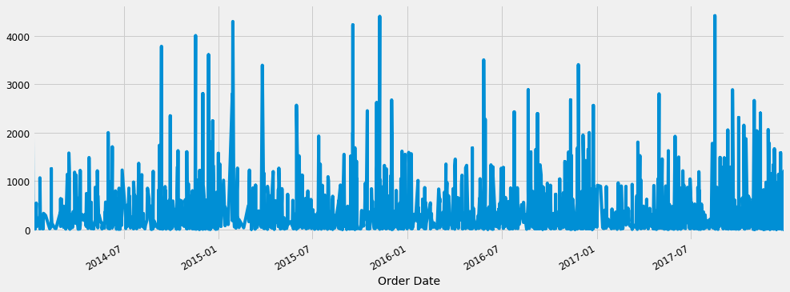
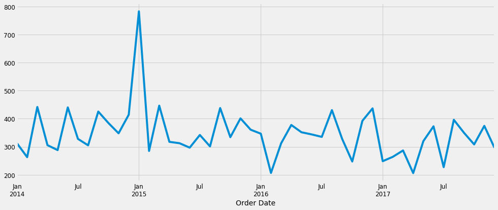
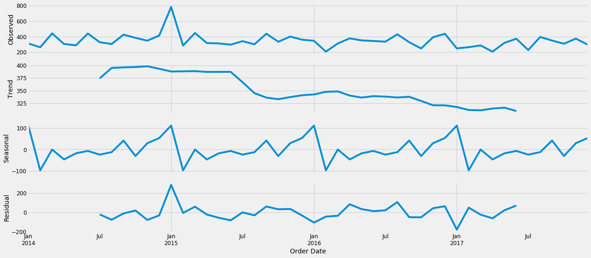
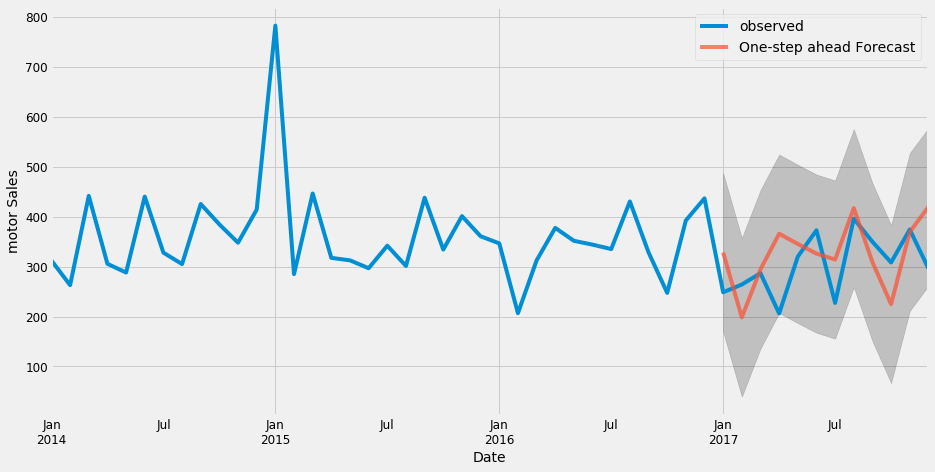
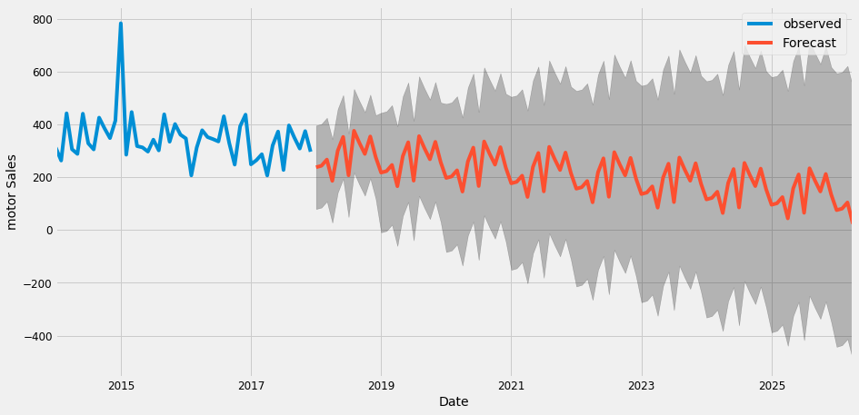

# OpenTrack
Time Series Analysis & Sales Forecasting of Motor Parts
# Plot 1
Plotting Sales Without Resampling to months or any other offset.

# Plot 2
Plotting Sales data by Resampling to month start frequency.

# Plot 3
Decomposing Time Series Data into Distinct Components.
- Observed
- Trend
- Seasonal
- Residual

# Plot 4
Validating Forecasts

# Plot 6
Finally Producing & Visualizing forecasts
